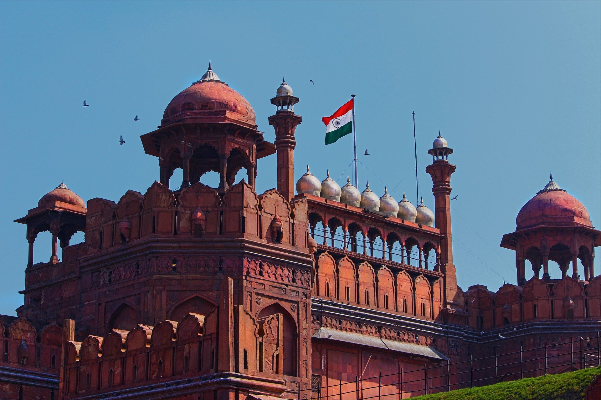

DELHI TRAVEL GUIDE: INDIA’S CRAZY CAPITAL!
There’s no escaping the fact that Delhi can be a little overwhelming. That said, it’s also one of the most incredible cities in India! Our Delhi travel guide helps you get the best out of the city while avoiding some of the “nuisances” that may present yourselves. We’ve had our fair share of Delhi learnings ourselves – as a multi-time foreign visitor and Indian couple, we’ve experienced all sides of Delhi – read this Delhi blog for how to get ahead in this mighty capital.

Despite its less than wonderful reputation as a travel destination, to miss out on visiting Delhi during a trip to India would be a bit of a sin. There are plenty of reasons to given India’s capital a chance, from its food, to its lush parks in the south of the city, to its mish-mash of cultures and languages that represent the varied tapestry that the sub-continent of India covers.
Delhi is a summary of all that India is – from its super modern metro to its crumbling havelis (historic stately homes), from its dusty spice markets to its gleaming and luxurious shopping malls.
But if there’s one reason that stands out most to us as a reason to visit, it’s Delhi’s history. Delhi is one of the longest-serving capitals in the world, and has witnessed the rise and fall of empires. A walk through Delhi can take you past monuments from the late 1100s to the present day, in a city heavily influenced by the Mughals, the British and many others
There’s no escaping the fact that Delhi can be a little overwhelming. That said, it’s also one of the most incredible cities in India! Our Delhi travel guide helps you get the best out of the city while avoiding some of the “nuisances” that may present yourselves. We’ve had our fair share of Delhi learnings ourselves – as a multi-time foreign visitor and Indian couple, we’ve experienced all sides of Delhi – read this Delhi blog for how to get ahead in this mighty capital.
Here are some of our tried and tested Delhi travel tips for newcomers.
1. If you’re staying in a mid-range or upscale hotel (which is a good idea), arrange an airport pickup directly with them for a smooth landing (more tips on airport transportation below).
2. If you’re flying long-haul, build in some time to rest and take it easy – Delhi can be overwhelming, especially when you’re tired.
3. Organise a tour for your first day in Delhi – Helps you to get your bearings and ease in to the pace of Delhi with the comfort of someone showing you around. (Book tours via reputable companies with good reviews, we don’t recommend using the guides loitering outside famous monuments in Delhi). See our recommendations below.
4. Ignore offers of “free” tuk-tuk rides or shopping tours. Anything that is “free” will invariably lead to you being taken to a number of shops, where the driver will earn a commission for taking you there and on any of your purchases.
5. Just after Diwali is not the ideal time to visit Delhi. Every year, the city gets covered in toxic smog. It’s better to visit later in the winter if you can.
6.If you have a few minutes at the airport, get an Airtel or Vodafone Simcard for your mobile phone – as this will make travel and communication in India much easier! The booths are located inside the arrivals hall.
7. Generally ignore people who come up to you at railway stations asking to see your ticket or at monuments – they are usually touts although their sales pitch may not come immediately.
8. The key with Delhi is to be cautious but not paranoid – hold your head up high, walk like you know where you’re going, and you’ll likely find people leave you alone!
Despite some of the tourist scams and hustle, Delhi is one of the best places for experiencing all that India has to offer. For best results, get up early to see Delhi’s sites in the magical morning light, complete with plenty of birds. Delhi gets uncomfortably hot outside of winter months (and surprisingly cold during winter!) so be sure to check the weather and pack accordingly.
Last but not least, relax and enjoy the scene.
Have you been to Delhi? What are your tips for getting the most of your visit, or do you have eco-friendly / responsible options to add? Let us know in the comments below!